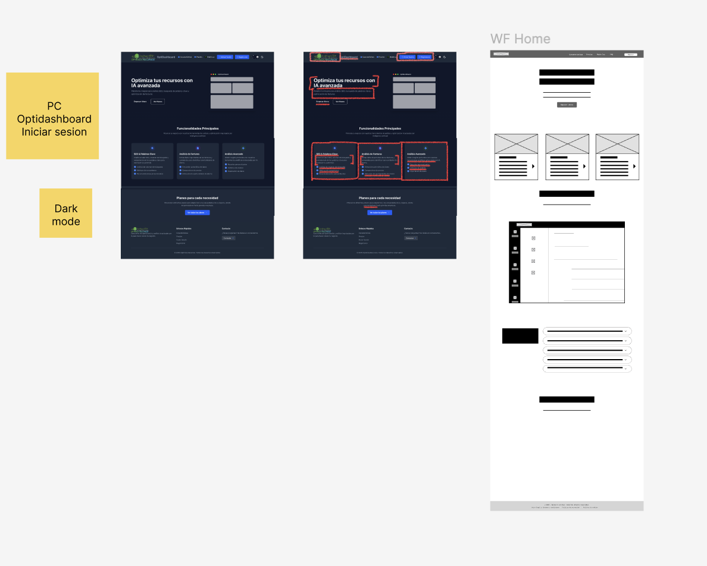
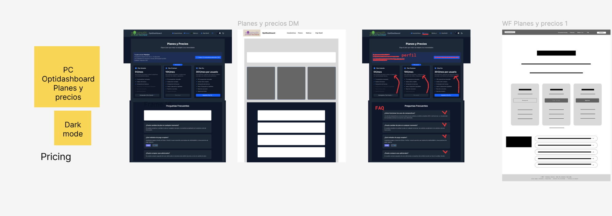
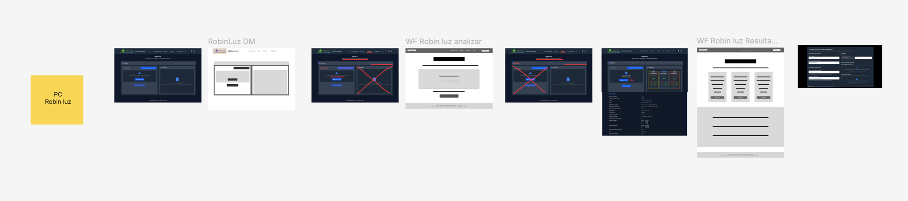
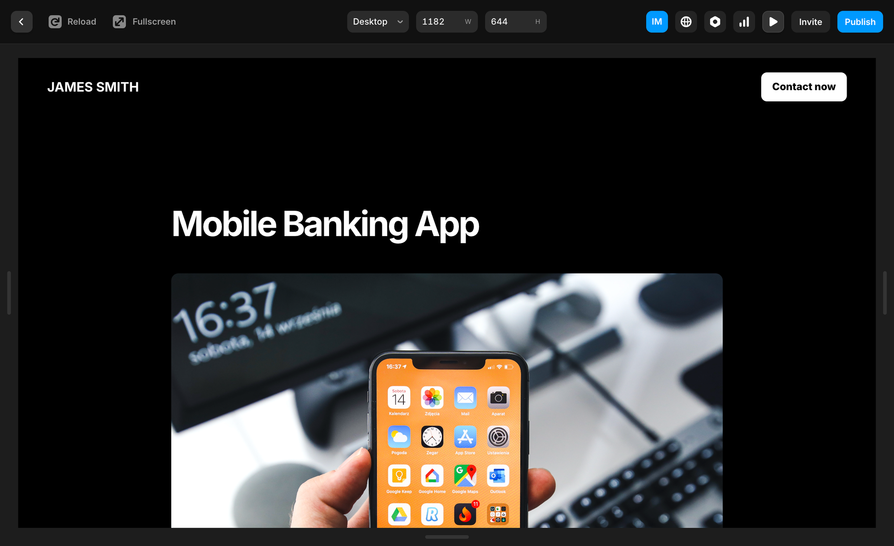

OptiDashboard
La plataforma B2B que opera en la sombra para que Robin Luz funcione. Un SaaS para empresas que mide el consumo energético segundo a segundo, cruza ofertas del mercado y controla la domótica de las oficinas.
La herramienta que los asesores sufrían a diario
Los asesores energéticos de Optimiza Recursos gestionaban más de 50 clientes cada uno, con 8 herramientas distintas abiertas a la vez. Tres horas al día perdidas en tareas manuales que el sistema debería hacer solo.
OptiDashboard era la solución técnica. Mi trabajo fue convertirla en una herramienta que los asesores quisieran usar — no que tuvieran que usar.

Web antigua — pantalla de inicio
Lo que había antes
Una web corporativa convertida en herramienta de trabajo a base de parches. Precios sin contexto, la sección de Robin Luz aislada del resto del ecosistema, y una arquitectura de información que no reflejaba cómo trabajaban los asesores.

Pricing — sin contexto ni narrativa

Robin Luz — desconectado del ecosistema
Una herramienta que respeta al asesor
El rediseño de OptiDashboard parte de entender cómo trabaja un asesor energético: empieza el día revisando alertas, gestiona clientes en paralelo, genera informes y cierra propuestas. El nuevo diseño organiza la información alrededor de ese flujo real.
El sistema de módulos — Seguridad, Optimeters, Robin Luz, Busquedas — se reorganizó en una barra lateral persistente. Los datos de consumo energético, antes enterrados en tablas, ahora tienen visualizaciones que permiten identificar anomalías de un vistazo.
- Barra lateral persistente con los 4 módulos principales
- Dark mode + Light mode — beige cálido para modo diurno
- Datos de IoT en tiempo real con visualizaciones comprensibles
- Adopción completa en 2 semanas desde el lanzamiento

OptiDashboard rediseñado — visualización de datos energéticos